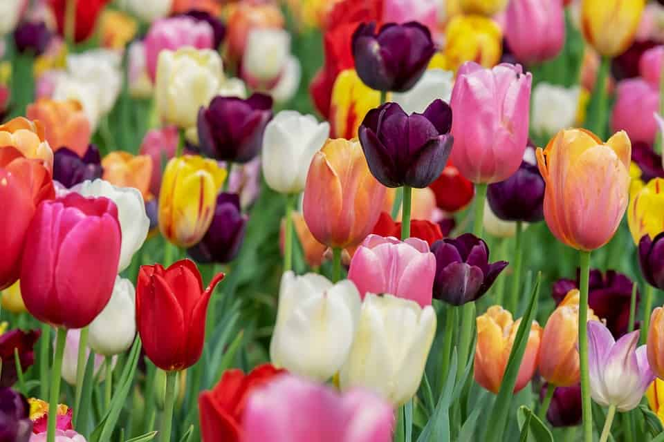
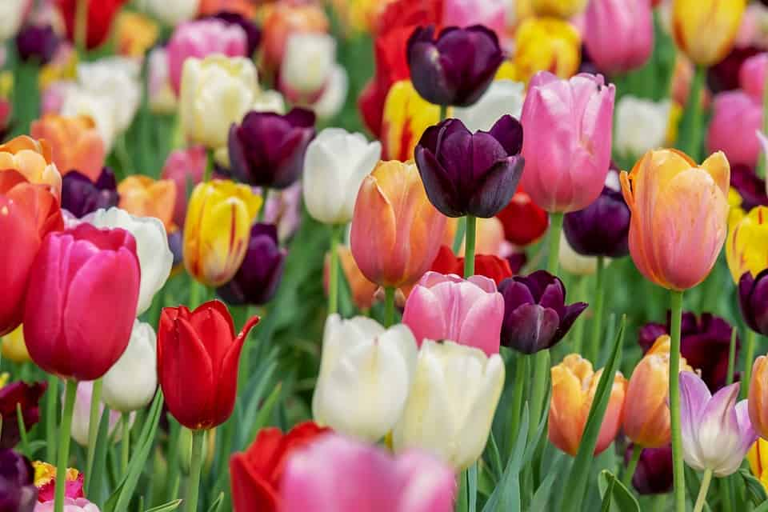
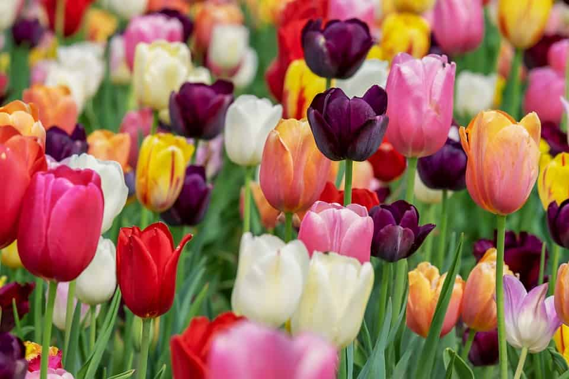

Daisy - Innocence, Loyal love, I’ll never tell
Daisy - Innocence, Loyal love, I’ll never tell  Tulip
Tulip
 What Does Each Flower Symbolize?
What Does Each Flower Symbolize?
Know the language of flowers! Which flowers represent love, hope, healing, loss, and good luck?
Asters -Symbol of Love, Daintiness
Daisy - Innocence, Loyal love, I’ll never tell
Tulip
Check your knowledge
Plese choose your favorite floweres, then we will sent a personality description based on your reply.
If you would like to receive the Flowers test results, kindly provide your email address in the field below.